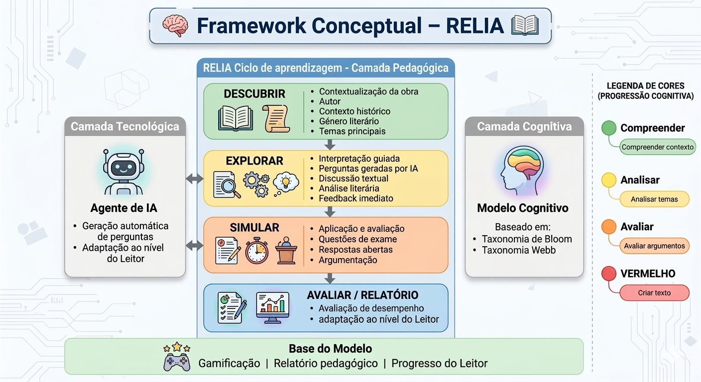
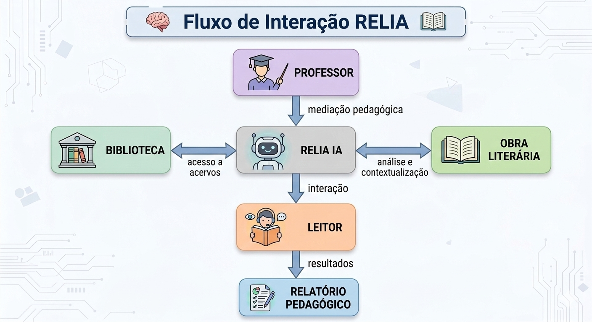

1
Manual Conceptual
Base científica, enquadramento teórico, método RELIA, arquitetura cognitiva e avaliação.
RELIA
Esta maquete articula rigor científico, arquitetura pedagógica e uma linguagem visual forte. O objetivo é transformar o manual num objeto de leitura, consulta e formação docente.
O RELIA pode ser lido e usado de duas formas complementares: como manual conceptual, para compreender os fundamentos do modelo, e como manual pedagógico, para o aplicar em contextos concretos de leitura, ensino e estudo autónomo.
Base científica, enquadramento teórico, método RELIA, arquitetura cognitiva e avaliação.
Aplicação didática organizada por cenários reais de mediação e estudo.
Leitura mediada, sessões bibliotecárias, clubes de leitura, dinamização cultural e literacia digital.
Planeamento de sessões, exploração orientada, interação com IA, debate e síntese final.
Uso individual da aplicação, consolidação de leitura, treino de resposta e autonomia interpretativa.
A promoção da literacia e da leitura continua a ser um dos pilares fundamentais das políticas educativas e culturais contemporâneas. No contexto português, o RELIA propõe uma resposta situada: combinar leitura literária, mediação pedagógica, bibliotecas escolares e inteligência artificial sem perder a centralidade do texto e da interpretação crítica.
As orientações curriculares para o ensino do Português tratam a leitura, a escrita, a oralidade e o conhecimento explícito da língua como competências estruturantes. Ao mesmo tempo, a expansão das tecnologias digitais e da inteligência artificial generativa alterou profundamente os ecossistemas de leitura, aprendizagem e acesso ao conhecimento.
Ferramentas baseadas em IA já apoiam síntese, geração de ideias, explicação de conteúdos e diálogo com utilizadores. Esse potencial é relevante para a educação, mas reforça a necessidade de desenvolver competências críticas que permitam aos estudantes avaliar, questionar e utilizar responsavelmente as respostas produzidas por sistemas de IA.
É neste cruzamento entre políticas de literacia, cultura digital e mediação pedagógica que o RELIA se posiciona: transformar a leitura numa experiência estruturada, interativa e reflexiva, apoiada por um percurso guiado de exploração da obra literária.
Sim. O Framework Conceptual e o Fluxo de Interação não são redundantes: cumprem funções distintas e complementares.
Recomendação editorial: manter as duas figuras, mas em momentos diferentes do manual e com legendas explicitamente distintas.
A leitura torna-se prática interpretativa, crítica, multimodal e socialmente situada, exigindo novas formas de mediação.
As bibliotecas deixam de ser apenas espaços de preservação e assumem funções de aprendizagem, inovação e participação.
A IA pode apoiar compreensão, escrita e diálogo, desde que integrada com supervisão pedagógica e avaliação crítica.
| Modelo tradicional | Modelo contemporâneo |
|---|---|
| Depósito de livros | Espaço de aprendizagem |
| Leitura individual | Interação e mediação |
| Silêncio | Colaboração |
| Acesso à informação | Produção de conhecimento |
Fonte: National Literacy Trust, relatório de 2024 sobre uso de IA para apoiar a literacia.
Leitura inferida a partir do relatório de Berens e Noorda sobre uso de bibliotecas por Gen Z e millennials.
O RELIA assenta num enquadramento que cruza literacia, leitura crítica, mediação pedagógica, transformação digital das bibliotecas e inteligência artificial conversacional. O objetivo não é somar conceitos, mas mostrar como estes campos se reforçam mutuamente no ensino do Português.
A literacia constitui uma competência central para a participação ativa nas sociedades contemporâneas, envolvendo não apenas a capacidade de decodificar textos, mas também de interpretar, avaliar e produzir significados em diferentes contextos comunicativos. No sistema educativo português, a disciplina de Português assume um papel estruturante neste processo.
A leitura literária desempenha aqui uma função especialmente exigente, porque convoca inferência, contextualização e reflexão crítica. Por essa razão, ganha relevo a mediação pedagógica, entendida como o conjunto de estratégias que orientam o leitor na exploração do texto.
Entre essas abordagens destaca-se a leitura dialogada, inspirada em perspetivas socioculturais da aprendizagem. Através de perguntas abertas, feedback e estímulos interpretativos, o mediador ajuda o leitor a construir compreensão de forma progressiva e socialmente situada.
A digitalização da informação alterou profundamente os hábitos de leitura, aprendizagem e acesso ao conhecimento. Os jovens circulam entre livros impressos, conteúdos digitais, redes sociais, plataformas multimodais e, cada vez mais, sistemas de IA.
Apesar disso, as bibliotecas continuam a ser relevantes como espaços de descoberta de livros, acesso a recursos educativos e interação social. Para responder às novas gerações, deixam de ser apenas lugares de preservação e passam a afirmar-se como centros de aprendizagem, inovação e participação comunitária.
Os sistemas de IA baseados em modelos de linguagem introduziram novas possibilidades para a educação e a literacia. Ferramentas de IA generativa produzem texto, respondem a perguntas e interagem em linguagem natural, podendo apoiar escrita, geração de ideias e compreensão de conteúdos.
No entanto, a integração destas tecnologias em contextos educativos exige cautela. Um dos principais riscos identificados é a utilização acrítica das respostas produzidas por IA, o que reforça a necessidade de desenvolver competências de validação, comparação e julgamento da informação.
Ao mesmo tempo, investigações recentes mostram que agentes conversacionais podem reproduzir alguns dos benefícios da leitura dialogada, nomeadamente no envolvimento cognitivo e na compreensão narrativa. É neste equilíbrio entre potencial e supervisão crítica que o RELIA se posiciona.
A convergência entre leitura mediada, bibliotecas e inteligência artificial abre a possibilidade de criar ambientes educativos mais interativos, personalizados e interpretativamente ricos. O RELIA estrutura essa convergência num modelo de mediação da leitura que combina orientação, diálogo e progressão cognitiva.
O RELIA - Roteiro Empático de Leitura com Inteligência Artificial é um modelo pedagógico concebido para apoiar a leitura literária através da interação entre o leitor, o texto e sistemas de inteligência artificial.
O método nasce da necessidade de responder a três desafios contemporâneos da educação literária: a diminuição dos hábitos de leitura prolongada, a crescente presença de ambientes digitais no processo de aprendizagem e a necessidade de promover competências de interpretação crítica e argumentação textual.
Neste contexto, o RELIA propõe uma abordagem que integra mediação pedagógica, interação dialógica e apoio de inteligência artificial para transformar a leitura numa experiência ativa, reflexiva e progressivamente mais complexa.
O método organiza-se em torno de um ciclo de aprendizagem estruturado, no qual o leitor passa por diferentes níveis de compreensão e análise do texto literário. Este ciclo é apoiado por um agente de inteligência artificial, responsável por gerar perguntas, orientar a interpretação e adaptar o percurso de aprendizagem ao nível do leitor.
A leitura literária não é entendida apenas como descodificação textual, mas como construção de significado que envolve interpretação, inferência e reflexão crítica. O método incentiva o leitor a relacionar o texto com o seu contexto histórico, cultural e literário.
Inspirado nos princípios da leitura dialógica, o RELIA utiliza perguntas abertas para estimular a participação ativa do leitor e convidá-lo a explicar ideias, identificar relações narrativas e formular interpretações próprias.
O modelo segue uma progressão inspirada na Taxonomia de Bloom e no Depth of Knowledge de Webb, organizando o desenvolvimento das competências desde níveis básicos de compreensão até níveis complexos de análise e criação.
A inteligência artificial atua como mediador pedagógico, permitindo gerar perguntas automaticamente, adaptar o nível de dificuldade ao leitor e fornecer feedback imediato.
O RELIA integra uma progressão cognitiva inspirada em modelos amplamente utilizados na educação, permitindo que o leitor avance gradualmente de níveis básicos de compreensão para níveis mais complexos de interpretação crítica.
| Fase | Competências cognitivas |
|---|---|
| Descobrir | Recordar / Compreender |
| Explorar | Compreender / Aplicar / Analisar |
| Simular | Aplicar / Analisar / Avaliar / Criar |
O processo de aprendizagem no RELIA é acompanhado por mecanismos de avaliação formativa que tornam visível o desenvolvimento do leitor e permitem ajustar o percurso de aprendizagem.
Regista desempenho do leitor, evolução ao longo do percurso e áreas que necessitam de reforço.
Utiliza estrelas, badges e indicadores de progresso para aumentar o envolvimento.
Acompanha o desenvolvimento das competências ao longo das diferentes etapas e reforça a autonomia interpretativa.
O método RELIA foi concebido para ser aplicado em diferentes ambientes educativos, mantendo a mesma estrutura pedagógica e adaptando a mediação de aprendizagem ao contexto institucional.
As bibliotecas escolares desempenham um papel fundamental na promoção da leitura, oferecendo um espaço de mediação entre o leitor e o texto literário. No contexto do RELIA, a biblioteca pode funcionar como um laboratório de leitura assistida por inteligência artificial.
Papel do bibliotecário: apresentar a obra literária, orientar a utilização da plataforma RELIA, estimular a discussão coletiva sobre o texto e apoiar os estudantes na formulação de interpretações.
Apresentação do autor, contexto histórico e relevância literária. Esta introdução corresponde à fase Descobrir.
Os estudantes respondem a perguntas geradas pela inteligência artificial, exploram personagens e temas, analisam passagens do texto e discutem interpretações. Esta etapa corresponde à fase Explorar.
Após a exploração individual, os estudantes participam numa discussão em grupo orientada pelo bibliotecário, comparando interpretações e reforçando a compreensão da obra.
Os estudantes respondem a uma questão interpretativa, escrevem um comentário crítico ou elaboram um pequeno ensaio. Esta etapa corresponde à fase Simular.
Em contexto de sala de aula, o RELIA pode ser integrado diretamente no ensino da literatura. O professor assume o papel de facilitador do processo interpretativo, utilizando o método para orientar a leitura e análise das obras.
Uma das características mais importantes do método RELIA é a possibilidade de promover aprendizagem colaborativa, permitindo que os estudantes confrontem diferentes interpretações da obra e desenvolvam competências de argumentação.
A turma é dividida em pequenos grupos, normalmente com 3 a 5 estudantes por grupo.
Os grupos analisam a obra com base em perguntas geradas pela inteligência artificial sobre temas, personagens, contexto histórico e elementos simbólicos.
Cada grupo elabora um mapa conceptual ou mapa visual da obra, identificando ideias principais, relações entre personagens e temas centrais.
Os grupos criam novas perguntas sobre a obra, que podem ser reutilizadas pelo sistema RELIA para gerar novas discussões interpretativas.
No final, os grupos apresentam os seus resultados ao resto da turma num momento de argumentação, pensamento crítico e aprendizagem colaborativa.
A aplicação do RELIA em contexto educativo oferece vários benefícios pedagógicos e reforça a consistência do trabalho de leitura ao longo do percurso escolar.
| Benefício | Descrição |
|---|---|
| Desenvolvimento da leitura crítica | Os estudantes são incentivados a interpretar o texto em vez de apenas memorizar conteúdos. |
| Aprendizagem ativa | A interação com perguntas e atividades promove uma participação mais ativa no processo de leitura. |
| Personalização da aprendizagem | A inteligência artificial permite adaptar o nível de dificuldade ao perfil do leitor. |
| Desenvolvimento de competências argumentativas | As atividades de interpretação e discussão ajudam os estudantes a desenvolver competências de argumentação e escrita crítica. |
A arquitetura pedagógica do RELIA estrutura o processo de leitura e interpretação literária através de um sistema integrado que combina mediação pedagógica, interação com inteligência artificial e mecanismos de gamificação. O objetivo é transformar a leitura da obra num percurso orientado, progressivo e cognitivamente exigente.
No RELIA, a inteligência artificial funciona como mediador pedagógico digital. Em vez de se limitar à recuperação de informação, o agente conversacional procura estimular reflexão interpretativa, análise narrativa e formulação de argumentos críticos.
Para garantir qualidade pedagógica, o sistema deve usar prompts estruturados que privilegiem perguntas abertas, solicitem justificações e promovam relações entre partes da obra.
A arquitetura do RELIA organiza o percurso do leitor desde formas básicas de reconhecimento até níveis avançados de análise, avaliação e criação. Esta progressão permite que a experiência de leitura acompanhe o amadurecimento interpretativo do aluno.
| Nível cognitivo | Objetivo pedagógico | Exemplo de interação |
|---|---|---|
| Recordar | Identificação de elementos da narrativa | Quem são as personagens principais? |
| Compreender | Interpretação básica do texto | O que motiva a ação da personagem? |
| Aplicar | Relacionar ideias da obra com situações | Como esta situação poderia ocorrer na realidade? |
| Analisar | Explorar relações entre elementos narrativos | Como o conflito influencia o desenvolvimento da história? |
| Avaliar | Formular juízos críticos | Concorda com as decisões da personagem? |
| Criar | Produção interpretativa ou criativa | Como poderia terminar esta história de forma diferente? |
No RELIA, a gamificação não deve funcionar como competição superficial, mas como mecanismo de motivação, acompanhamento e visibilidade do progresso do leitor.
O RELIA organiza a leitura como percurso estruturado, e não como sequência solta de perguntas. A experiência progride por três momentos articulados:

Camadas tecnológica, pedagógica e cognitiva do RELIA, com progressão de Descobrir a Avaliar.
A aplicação do RELIA em contexto educativo foi concebida para integrar-se de forma flexível nas práticas pedagógicas de leitura e interpretação literária. O modelo combina mediação estruturada, interação dialogada com inteligência artificial e aprendizagem colaborativa entre pares.
Uma sessão típica de aplicação do RELIA em sala de aula pode durar entre 60 e 90 minutos, dependendo da complexidade da obra e do nível de ensino dos alunos.
| Etapa | Objetivo pedagógico | Duração aproximada |
|---|---|---|
| Introdução | Contextualizar a obra e apresentar a atividade | 10 min |
| Leitura orientada | Explorar o texto com apoio do roteiro RELIA | 20-25 min |
| Interação com IA | Responder às questões interpretativas | 15-20 min |
| Discussão em grupo | Partilhar interpretações e argumentos | 15-20 min |
| Reflexão final | Síntese e consolidação das aprendizagens | 10-15 min |
Introdução do autor, período histórico, género literário, temas principais e contexto cultural ou social, com ativação de conhecimentos prévios.
Organização de pequenos grupos para favorecer discussão entre pares, construção coletiva de interpretações e participação diferenciada.
Uso de questões organizadas por níveis cognitivos, diretamente na plataforma ou em fichas de trabalho mediadas pelo professor.
Clarificação de dúvidas, aprofundamento da interpretação e geração de novas perguntas orientadoras.
Partilha de respostas, comparação de leituras e confronto de argumentos com base em provas textuais.
Consolidação das interpretações principais e ligação entre leitura, argumentação e reflexão crítica.
A organização em grupos favorece a participação, a segurança interpretativa e a construção coletiva de sentido. Recomenda-se a distribuição de papéis para estruturar a participação.
| Papel | Função |
|---|---|
| Leitor | Lê o excerto da obra. |
| Intérprete | Responde às questões do roteiro. |
| Moderador | Organiza a discussão. |
| Relator | Apresenta as conclusões do grupo. |
A flexibilidade metodológica permite ajustar o RELIA a contextos, ritmos de trabalho e perfis de turma distintos.
A implementação do RELIA em bibliotecas constitui uma dimensão estratégica do projeto, porque permite integrar leitura literária, mediação pedagógica, inteligência artificial e participação coletiva em espaços de aprendizagem culturalmente relevantes.
As bibliotecas escolares são espaços privilegiados para apoiar a leitura de obras literárias recomendadas nos programas escolares, promover atividades de interpretação orientada e incentivar a participação ativa dos alunos na análise de textos.
| Etapa | Atividade |
|---|---|
| Introdução | Apresentação da obra e do autor |
| Leitura | Leitura de excertos ou capítulos |
| Interação | Exploração das questões do roteiro RELIA |
| Debate | Discussão coletiva das interpretações |
| Síntese | Reflexão final sobre os temas da obra |
Nas bibliotecas públicas, o RELIA pode ser utilizado como ferramenta de dinamização cultural e promoção da literacia junto de diferentes públicos. A leitura deixa de ser apenas prática individual e passa a ser experiência coletiva, intergeracional e culturalmente mediada.
O modelo pode apoiar ciclos de leitura literária, encontros de interpretação de obras, oficinas de leitura crítica e programas de literacia digital e literária.
| Sessão | Atividade |
|---|---|
| 1 | Apresentação da obra e contextualização |
| 2 | Exploração de personagens e conflitos |
| 3 | Análise temática e simbólica |
| 4 | Debate crítico e produção interpretativa |
Os clubes de leitura são contextos particularmente adequados ao RELIA, porque assentam precisamente na partilha de interpretações e no debate em torno de obras literárias.
| Fase | Atividade |
|---|---|
| Preparação | Leitura prévia da obra |
| Exploração | Questões interpretativas do roteiro |
| Debate | Discussão coletiva entre participantes |
| Expansão | Comparação com outras obras ou contextos |
O RELIA pode ser mobilizado em programas destinados a jovens estudantes, adultos em formação contínua, comunidades com menor acesso a recursos educativos e participantes em programas de literacia digital.
A combinação entre mediação humana e apoio tecnológico permite criar experiências de leitura mais interativas, acessíveis e ajustáveis a públicos diversos.
Introduz metodologias de mediação da leitura que combinam tradição literária e tecnologias digitais.
Incentiva a participação de diferentes públicos em programas culturais e educativos.
Desenvolve competências críticas relacionadas com o uso de tecnologias e de inteligência artificial.
Reforça o papel das bibliotecas como espaços contemporâneos de aprendizagem, interpretação e cultura.

Bibliotecas escolares, bibliotecas públicas, clubes de leitura e programas de literacia podem integrar o modelo RELIA com funções distintas mas complementares.
A fase Descobrir inicia o percurso RELIA com atividades de contextualização, investigação colaborativa e construção de andaimes cognitivos para a leitura literária.
Dinâmica de investigação por equipas para construir o contexto histórico, literário e autoral da obra antes da interpretação.
Estruturar confronto argumentativo a partir de excertos, hipóteses de leitura e evidência textual.
Usar a IA para diversificar ângulos de leitura e reforçar o trabalho de interpretação guiada.
Transferir o trabalho desenvolvido para situações formais de resposta fechada e aberta.
A fase Descobrir constitui o momento de ativação do conhecimento prévio e construção de contexto interpretativo, preparando o leitor para uma leitura mais profunda da obra literária. Nesta fase, o aluno ainda não está a interpretar a obra, mas a construir o cenário intelectual que permitirá interpretá-la posteriormente.
O método RELIA organiza essa preparação em quatro eixos cognitivos fundamentais, que funcionam como andaimes cognitivos para a interpretação posterior.
Do ponto de vista da aprendizagem, esta atividade mobiliza níveis iniciais da Taxonomia de Bloom, sobretudo Remember e Understand, e níveis DOK 1 e DOK 2, ligados à identificação de informação e à explicação básica de relações históricas e literárias.
Mais do que reunir dados, a dinâmica pretende fazer o aluno compreender que uma obra literária não existe isoladamente, mas inserida numa rede histórica, cultural e estética.
A atividade transforma os alunos em equipas de investigação literária. Cada grupo assume responsabilidade por um eixo de conhecimento, promovendo especialização cognitiva antes da partilha coletiva.
| Grupo | Tema de investigação |
|---|---|
| Grupo 1 | Contexto histórico |
| Grupo 2 | Contexto literário |
| Grupo 3 | Autor |
| Grupo 4 | Estrutura da obra |
Etapa 1. Apresentação da obra: o professor bibliotecário apresenta título, autor e época. Exemplo: “Hoje vamos preparar a leitura de Os Lusíadas.” O objetivo não é explicar a obra, mas despertar curiosidade investigativa.
Etapa 2. Formação das equipas: os alunos são divididos em quatro grupos e cada grupo recebe um cartão de missão com o seu tema.
Etapa 3. Investigação guiada: pesquisa rápida com livros da biblioteca, tablets, computadores ou materiais fornecidos pelo professor. Tempo sugerido: 15 minutos.
Etapa 4. Construção do mapa visual: cada grupo cria um mini mapa conceptual em papel A3, quadro digital, Padlet ou Miro.
Etapa 5. Produção de perguntas de exame: cada grupo cria três perguntas possíveis de exame nacional.
Título, autor e época.
Distribuição dos quatro eixos.
Pesquisa rápida com fontes selecionadas.
Construção conceptual do tema.
Três questões possíveis por grupo.
Durante esta fase, cada grupo deve produzir dois resultados: um mapa visual do seu tema e três possíveis perguntas de exame.
O mapa deve conter palavras-chave, ligações entre ideias e pequenas explicações, permitindo passar da recolha de dados à organização conceptual.
Este momento é essencial porque os alunos começam a pensar como o exame pensa.
Após a investigação, os grupos apresentam os seus resultados. O professor organiza todos os mapas num painel central chamado Mapa Cognitivo da Obra, reunindo história, literatura, autor e estrutura.
O resultado é uma visão integrada da obra e uma base sólida para a fase Explorar.
Fluxo pedagógico da ativação contextual para a visão integrada da obra.
A avaliação pedagógica do RELIA procura analisar o impacto do modelo no desenvolvimento da leitura, da interpretação literária e do pensamento crítico. Para isso, combina instrumentos qualitativos e quantitativos e acompanha não apenas resultados finais, mas também processos de progressão do leitor.
| Dimensão | Indicador | Descrição |
|---|---|---|
| Compreensão textual | Identificação de elementos narrativos | Reconhecer personagens, contexto e acontecimentos. |
| Interpretação | Análise de significados implícitos | Interpretar temas, símbolos e relações internas da obra. |
| Argumentação | Justificação de interpretações | Sustentar respostas com evidências do texto. |
| Pensamento crítico | Avaliação de decisões narrativas | Analisar conflitos, escolhas e motivações. |
| Criatividade interpretativa | Produção de interpretações alternativas | Propor leituras originais e hipóteses justificadas. |
| Nível | Descrição | Evidência esperada |
|---|---|---|
| 1. Identificação | Reconhecimento de elementos da narrativa | Nomeação correta de personagens e acontecimentos. |
| 2. Compreensão | Explicação básica de acontecimentos | Interpretação simples de ações ou conflitos. |
| 3. Aplicação | Relacionar elementos da obra com outros contextos | Comparações e transferências simples. |
| 4. Análise | Exploração de relações entre personagens e temas | Identificação de causas, efeitos e articulações. |
| 5. Avaliação | Formulação de juízos críticos | Argumentação fundamentada sobre decisões narrativas. |
| 6. Criação | Produção de interpretações originais | Propostas criativas ou leituras alternativas justificadas. |
Observa a passagem do leitor por níveis progressivamente mais exigentes de compreensão, análise e reflexão.
Analisa a capacidade de justificar interpretações com evidência textual.
Considera respostas ao roteiro, participação em debates e interação com o agente conversacional.
Os dados recolhidos permitem identificar evolução das competências de leitura, níveis de participação nas atividades e impacto da interação com inteligência artificial na interpretação da obra. A análise deve combinar dados quantitativos e qualitativos.
No contexto português, faz sentido aproximar esta análise dos parâmetros valorizados em itens de resposta restrita e aberta observáveis nos materiais do IAVE: conteúdo, estruturação do discurso, correção linguística e qualidade da justificação.
A avaliação sistemática do RELIA permite identificar boas práticas, ajustar atividades às necessidades dos participantes e contribuir para investigação em literacia, leitura literária e tecnologias educativas.
Esta dimensão reforça o potencial do RELIA como modelo de promoção da leitura, mediação interpretativa e inovação pedagógica.
O RELIA foi concebido como um modelo pedagógico capaz de responder aos desafios contemporâneos da promoção da leitura e da literacia no contexto da transformação digital. No estado atual do projeto, os exemplos de trabalho devem centrar-se em Os Lusíadas e no Sermão de Santo António aos Peixes, para garantir consistência curricular e profundidade pedagógica.
O roteiro orienta a identificação de personagens, episódios, conflitos, temas e estratégias discursivas em obras como Os Lusíadas e o Sermão de Santo António aos Peixes.
As perguntas interpretativas incentivam o leitor a analisar significados implícitos, ironia, intenção retórica e construção simbólica.
A interação com a aplicação e o debate coletivo substituem a receção passiva por participação interpretativa.
Ao justificar leituras com base no texto, os alunos consolidam competências essenciais para o ensino do Português.
O RELIA oferece um contributo relevante para o papel das bibliotecas no ecossistema contemporâneo de aprendizagem. Ao articular leitura literária, tecnologia e mediação, pode apoiar programas estruturados de leitura com obras do cânone escolar e textos de forte valor cultural.
O RELIA representa uma inovação pedagógica porque combina leitura dialogada, taxonomia de Bloom, agentes conversacionais e gamificação num modelo único de mediação da leitura. Essa combinação torna-se particularmente produtiva quando aplicada a obras que exigem contextualização forte e interpretação orientada, como Camões e Vieira.
Ao integrar inteligência artificial num ambiente estruturado, o RELIA permite desenvolver uso responsável de sistemas de IA, avaliação crítica da informação e reflexão sobre o papel das tecnologias na aprendizagem.
Este contributo é especialmente relevante num contexto em que muitos estudantes já usam ferramentas de IA generativa em tarefas escolares, mas nem sempre com critérios de validação adequados.
A aplicação do modelo em contextos educativos e bibliotecários permite recolher dados sobre evolução das competências de leitura, impacto da interação com agentes conversacionais e níveis de envolvimento dos leitores em atividades mediadas por tecnologia.
Num primeiro momento, os casos de Os Lusíadas e do Sermão de Santo António aos Peixes são suficientes para produzir evidência inicial comparável e metodologicamente controlada.
Para além do impacto educativo, o RELIA pode contribuir para valorizar a literatura como espaço de reflexão cultural, criar comunidades de leitores e reforçar a ligação entre escola, biblioteca e património literário português.
Nesta fase do projeto, todos os exemplos aplicados do manual devem manter-se dentro de dois contextos: Os Lusíadas, de Luís de Camões, e Sermão de Santo António aos Peixes, do Padre António Vieira. Esta restrição melhora a qualidade do desenvolvimento pedagógico e evita dispersão.
O RELIA apresenta-se como um modelo pedagógico inovador para apoiar a interpretação literária em contextos educativos e bibliotecários. A proposta articula mediação da leitura, progressão cognitiva, leitura dialogada e interação com agentes conversacionais, procurando integrar tecnologia e tradição literária sem empobrecer a exigência interpretativa.
O RELIA transforma a inteligência artificial num instrumento de mediação da leitura, capaz de apoiar contextualização, análise textual, argumentação e reflexão crítica. Ao organizar a leitura em etapas progressivas, orienta os leitores na construção de significados e na formulação de interpretações fundamentadas.
O modelo pode ser aplicado em sala de aula, bibliotecas escolares, bibliotecas públicas e clubes de leitura, reforçando o papel social da leitura e a relevância das bibliotecas como ambientes de aprendizagem e participação cultural.
Apesar do potencial do modelo, o RELIA encontra-se ainda numa fase de desenvolvimento e implementação experimental. Por isso, é metodologicamente adequado concentrar o trabalho aplicado em duas obras: Os Lusíadas e o Sermão de Santo António aos Peixes.
Consolidar a aplicação com Os Lusíadas e Sermão de Santo António aos Peixes.
Validar empiricamente o modelo em contextos escolares e bibliotecários.
Expandir o guia do aluno e os exemplos aplicados por nível de ensino.
Transformar o RELIA num ecossistema estável de leitura, mediação e investigação.
Este manual deve evoluir com a prática. A secção seguinte cria um mecanismo simples para recolher sugestões, novos roteiros, correções científicas e exemplos de aplicação vindos de professores e bibliotecários.
O formulário abaixo guarda um rascunho localmente no navegador e prepara uma mensagem estruturada. Basta definir o email oficial do projeto no script para ativar o envio direto.
Sugestão: usar um endereço institucional dedicado ao manual pedagógico RELIA.